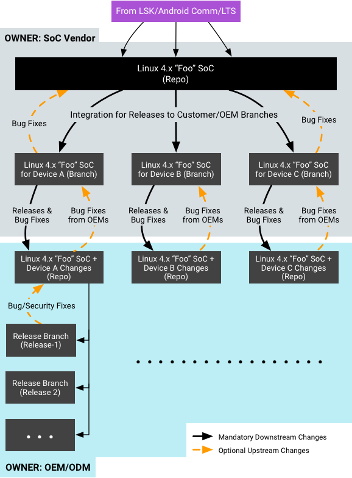
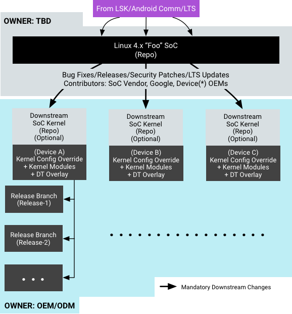

In Android O, the device kernel splits into System-on-Chip (SoC), device, and board-specific deliverables. This sets up the kernel and Android such that Original Device Manufacturers (ODMs) and Original Equipment Manufacturers (OEMs) can work in isolated board–specific trees for board–specific features, drivers, etc., enabling them to override common kernel configuration, add new drivers in the form of kernel modules, etc.
This page provides details on requirements for:
All SoC kernels should support loadable kernel modules. As a starting point, the following kernel-config options (or their kernel-version equivalent) have been added to android-base.cfg in all common kernels and must be enabled in all device kernels:
CONFIG_MODULES=y CONFIG_MODULE_UNLOAD=y CONFIG_MODVERSIONS=y
All kernel modules are subject to module load/unload testing to ensure the correctness of the driver/module.
Optionally, ODMs can enable module signing in their own kernel configuration by enabling following kernel config options:
CONFIG_MODULE_SIG=y CONFIG_MODULE_SIG_FORCE=y
On devices required to support verified boot, Android requires the kernel modules to be in the partitions that have dm-verity enabled. Module signing is not mandatory and will not be tested against; however, if desired, an ODM can enable module signing as long as they have the key signing and other infrastructure required to ensure independent kernel and filesystem OTA updates in the future.
While Android 7.x and earlier do not mandate against kernel modules (and
include support for insmod and rmmod), Android O
recommends the use of kernel modules in the ecosystem. The following table shows
potential board–specific peripheral support required across three Android boot
modes:
| Boot Mode | Storage | Display | Keypad | Battery | PMIC | Touchscreen | NFC, Wi-Fi, Bluetooth |
Sensors | Camera |
|---|---|---|---|---|---|---|---|---|---|
| Recovery | > | ||||||||
| Charger | |||||||||
| Android |
In addition to availability in Android boot modes, kernel modules may also be categorized by who owns them (the SoC vendor or the ODM). If kernel modules are being used, requirements for their placement in filesystem are as follows:
/system./vendor/lib/modules./odm/lib/modules. Otherwise, these modules should be located in
/vendor/lib/modules.ramfs at
/lib/modules.rootfs and
either the /vendor or /odm partitions
(as described above)./vendor or /odm, as those partitions are not
mounted in Recovery mode.In Android 7.x and earlier, /vendor and /odm
partitions are not mounted early. In Android O, to make module
loading from these partitions possible, provisions have been made to mount
partitions early for both
non-A/B and A/B
devices. This also ensures the partitions are mounted in both Android and
Charger modes.
In BoardConfig.mk, the Android build defines a
BOARD_VENDOR_KERNEL_MODULES variable that provides a full list of
the kernel modules intended for the vendor image. The modules listed in this
variable are copied into the vendor image at /lib/modules/, and,
after being mounted in Android, appear in /vendor/lib/modules (in
accordance with the above requirements). Example configuration of the vendor
kernel modules:
vendor_lkm_dir := device/$(vendor)/lkm-4.x BOARD_VENDOR_KERNEL_MODULES := \ $(vendor_lkm_dir)/vendor_module_a.ko \ $(vendor_lkm_dir)/vendor_module_b.ko \ $(vendor_lkm_dir)/vendor_module_c.ko
… where a vendor kernel module pre-built repository is mapped into the Android build at the location listed above.
The recovery image is likely to contain a subset of the vendor modules. The
Android build defines the variable BOARD_RECOVERY_KERNEL_MODULES
for these modules. Example:
vendor_lkm_dir := device/$(vendor)/lkm-4.x BOARD_RECOVERY_KERNEL_MODULES := \ $(vendor_lkm_dir)/vendor_module_a.ko \ $(vendor_lkm_dir)/vendor_module_b.ko
The Android build takes care of running depmod to generate the
required modules.dep files in /vendor/lib/modules and
/lib/modules (recovery ramfs).
We recommend loading all kernel modules in one pass from
init.rc* by invoking modprobe -a. This avoids the
overhead of repeatedly initializing the C runtime environment for the
modprobe binary. The early-init event can be modified
to invoke modprobe:
on early-init
exec u:r:modprobe:s0 -- /vendor/bin/modprobe -a -d \
/vendor/lib/modules module_a module_b module_c ...
The kernel image may be updated separately from the vendor image, meaning
that kernel modules may be used with kernels other than the one they were
originally compiled against. To allow for this, and to protect against ABI
breakages, module versioning is used. Module versioning is enabled by
CONFIG_MODVERSIONS=y (one of the required kernel configuration
options mentioned above) and is documented in the kernel tree at
Documentation/kbuild/modules.txt.
All Treble-enabled devices must enable first stage mount to make sure
init can load SELinux policy fragments that are spread across
system and vendor partitions (this also enables
loading of kernel modules as soon as possible after kernel boot).
Android must have access to the filesystem(s) on which the modules reside. To
enable, Android O supports mounting /system, /vendor,
or /odm as early as init's first stage (i.e before
selinux is initialized). Device makers can use
device tree overlays to
specify fstab entries for early mounted partitions.
Requirements to early mount partitions with vboot 1.0 include:
fstab and device tree entries. For example, instead of specifying
partitions using /dev/block/mmcblk0pX, ensure partitions are named
and the device node is /dev/block/…./by-name/{system,vendor,odm}.
PRODUCT_{SYSTEM,VENDOR}_VERITY_PARTITION and
CUSTOM_IMAGE_VERITY_BLOCK_DEVICE in the device configuration for
the product (i.e. in
device/oem/project/device.mk) must match the
corresponding block device nodes specified by-name in the
fstab/device tree entries. Example:
PRODUCT_SYSTEM_VERITY_PARTITION := /dev/block/…./by-name/system PRODUCT_VENDOR_VERITY_PARTITION := /dev/block/…./by-name/vendor CUSTOM_IMAGE_VERITY_BLOCK_DEVICE := /dev/block/…./by-name/odm
fstab file fragments. For example, when specifying an entry to
mount /vendor in the device tree, the fstab file must
not repeat that entry./system, /odm, or /vendor can be
mounted early. Android does not include support to mount any other partitions in
init first stage.verifyatboot must not be
early mounted (doing so is unsupported).androidboot.veritymode option (existing
requirement).In Android O, init parses the device tree and creates
fstab entries to mount the partition early during its first stage.
An fstab entry takes the form:
src mnt_point type mnt_flags fs_mgr_flags
Device tree properties are defined to mimic that format:
fstabentries must be under /firmware/android/fstab
in the device tree and must have compatible string set to
android,fstab. /firmware/android/fstab is treated as a single
early mount fstab entry. A node must have the following properties
defined:
dev. Must point to the device node representing the
partition by-name.type. Must be the filesystem type (as in the
fstab files).mnt_flags. Must be the comma-separated list of mount
flags (as in fstab files).fsmgr_flags. Must be the list of Android fs_mgr
flags (as in fstab files).
slotselect fs_mgroption.verify fs_mgr option.
The following example shows device tree early mount for system
and vendor partitions on Nexus 6P:
/ {
firmware {
android {
compatible = "android,firmware";
fstab {
compatible = "android,fstab";
system {
compatible = "android,system";
dev = "/dev/block/platform/soc.0/f9824900.sdhci/by-name/system";
type = "ext4";
mnt_flags = "ro,barrier=1,inode_readahead_blks=8";
fsmgr_flags = "wait,verify";
};
vendor {
compatible = "android,vendor";
dev = "/dev/block/platform/soc.0/f9824900.sdhci/by-name/vendor";
type = "ext4";
mnt_flags = "ro,barrier=1,inode_readahead_blks=8";
fsmgr_flags = "wait";
};
};
};
};
};
The following example shows device tree early mount for
/vendor on Pixel (remember to add slotselect for
partitions subject to A/B):
/ {
firmware {
android {
compatible = "android,firmware";
fstab {
compatible = "android,fstab";
vendor {
compatible = "android,vendor";
dev = "/dev/block/platform/soc/624000.ufshc/by-name/vendor";
type = "ext4";
mnt_flags = "ro,barrier=1,discard";
fsmgr_flags = "wait,slotselect,verify";
};
};
};
};
};
VBoot 2.0 is Android Verified Boot (AVB). The requirements to early mount partitions with VBoot 2.0 are:
fstab and device tree entries. For example, instead of specifying
partitions using /dev/block/mmcblk0pX, ensure the partitions are
named and the device node is
/dev/block/…./by-name/{system,vendor,odm}.PRODUCT_{SYSTEM,VENDOR}_VERITY_PARTITION and
CUSTOM_IMAGE_VERITY_BLOCK_DEVICE) used for VBoot 1.0 are NOT
required for VBoot 2.0. Instead, new build variables introduced in VBoot 2.0
(including BOARD_AVB_ENABLE := true) should be defined; for a full
configuration, refer to
Build-System-Integration
for AVB.fstab file fragments. For example, if you specify an entry to mount
/vendor in the device tree, the fstab file must not
repeat that entry./system, /odm, or /vendor can be
mounted early. Android does not include support to mount any other partitions in
init first stage.verifyatboot, regardless of whether
early mount is enabled or not.androidboot.veritymode option (existing requirement).
Make sure to include the following fixes for AVB:
The configuration in device tree for VBoot 2.0 is the same as that in VBoot 1.0, with the following exceptions:
fsmgr_flag is switched from verify to
avb./boot).The following example shows device tree early mount for system
and vendor partitions on Nexus 5X. Note that:
/system is mounted with AVB and /vendor is mounted
without integrity verification./vbmeta partition, so the top-level
vbmeta resides at the end of /boot partition (for details, refer to
the
AOSP
changelist).
/ {
firmware {
android {
compatible = "android,firmware";
vbmeta {
compatible = "android,vbmeta";
parts = "boot,system,vendor";
};
fstab {
compatible = "android,fstab";
system {
compatible = "android,system";
dev = "/dev/block/platform/soc.0/f9824900.sdhci/by-name/system";
type = "ext4";
mnt_flags = "ro,barrier=1,inode_readahead_blks=8";
fsmgr_flags = "wait,avb";
};
vendor {
compatible = "android,vendor";
dev = "/dev/block/platform/soc.0/f9824900.sdhci/by-name/vendor";
type = "ext4";
mnt_flags = "ro,barrier=1,inode_readahead_blks=8";
fsmgr_flags = "wait";
};
};
};
};
};
The following example shows mounting /vendor early on a Pixel.
Note that:
/vendor is
early mounted.slotselect for partitions
subject to A/B.
/ {
vbmeta {
compatible = "android,vbmeta";
parts = "vbmeta,boot,system,vendor,dtbo";
};
firmware {
android {
compatible = "android,firmware";
fstab {
compatible = "android,fstab";
vendor {
compatible = "android,vendor";
dev = "/dev/block/platform/soc/624000.ufshc/by-name/vendor";
type = "ext4";
mnt_flags = "ro,barrier=1,discard";
fsmgr_flags = "wait,slotselect,avb";
};
};
};
};
};
Device Tree Overlay (DTO) was
designed to extend the existing
flattened
device-tree (FDT) implementation so that the initial device-tree data in
kernel can be modified by userspace at runtime by loading additional overlay
FDTs that amend the original data. Android does not require runtime updates of
DT blobs from user space, but instead recommends that vendors add the device
tree patching in the bootloader with the help of
libfdt/libufdt.
In Android 7.x and earlier, Android did not require device tree support and did not provide recommendations regarding how vendors pass DT blobs to the kernel or where they store them. Android O recommends such support to keep the board–specific and SoC-only parts of the kernel separate.
Most Android devices today append the DT blob to the kernel at build time, which the bootloader knows how to read from. As Android has no specific requirements for how to build/store DT blobs (which is considered as part of the SoC kernel), the DT blob can be appended to the kernel or stored in a separate partition. The only assumption is that the bootloader already knows how and where to load the DT blob from.
Requirements for Device Tree Overlay support (if used):
Requirements for bootloader include the following:
For more details about adding support for DTO in bootloader, see Device Tree Overlays.
Android O mandates a minimum kernel version and kernel configuration and
checks them both in VTS as well as during an OTA. Android device kernels must
enable the kernel .config support along with the option to read the
kernel configuration at runtime through procfs.
All device kernels must enable the entirety of android-base.cfg, which must include the following kernel–config options (or their kernel–version equivalent):
CONFIG_IKCONFIG=y CONFIG_IKCONFIG_PROC=y
Kernel version requirements:
Device tree support in the kernel must be enabled and bootloaders must pass
the hardware description in the form of device tree to the kernel (unless the
platform supports ACPI). The device tree must also be available for Android to
read and be able to pass vendor/odm specific parameters to Android.
CONFIG_OF (along with all other device/subsystem specific
CONFIG_OF_* kernel config options) are mandatory.
CONFIG_PROC_DEVICETREE is required on kernels prior to 3.15 so
Android can access vendor/odm specific configuration very early during boot. On
kernels 3.15 and later, the functionality of this option is merged into
CONFIG_OF.
CONFIG_OF=y CONFIG_PROC_DEVICETREE=y (kernels prior to 3.15)
For an example of using device tree to early mount
vendor/odm partitions, refer to the
AOSP
changelist.
The implementation of the vendor interface should not rely on
debugfs. It may be enabled, but VTS testing may be done with
debugfs unmounted.
Android O recommends any board–specific kernel functionality to be in the form of loadable kernel modules and device–tree overlays. The rest of the kernel is treated monolithically with respect to Android (whether or not is it is actually a monolithic kernel, or parts of it are compiled as kernel modules).
This monolithic kernel is an SoC kernel that can boot on the SoC vendor's reference hardware but nothing beyond that. Today, SoC kernels are treated similar to the common kernel; they are also heavily replicated in board–specific repos. This distribution model causes them to be fixed differently for the same bug in each branch, delaying future updates to the kernel due to cherry–picking at different times or fixing the same bug differently. To counter this, the SoC kernels must be a separate deliverable, with everyone who uses the SoC contributing to the same SoC kernel.
Figure 1 (below) illustrates a common example of how SoC kernels get fragmented over time, across Android releases, and across ODMs.
Figure 1 shows the following:
The proposed model for a common SoC kernel addresses problems created by upmerging changes (SoC-specific bug fixes, LTS upgrades, security fixes, etc.). Figure 2 (below) illustrates how the workflow will change in an ideal, unified–per–SoC–kernel scenario:
This is intended to solve the problem of fragmented kernel repos by recommending and working with device manufacturers to stay up to date with the common SoC kernel. Android O provides all possible options to ODMs to help them avoid maintaining their own SoC kernels and instead rely on the common SoC kernel for LTS upgrades/bug fixes/security patches/etc.
As a start, we want to facilitate all ODMs/vendors using a single kernel source for an SoC. In the future, we want to move towards a single binary distribution of kernel per-SoC.
To make updating to newer kernel versions much easier and almost automatic, and to provide a more secure and reliable platform for ODMs to build a product with, it is strongly recommended that SoC vendors work to upstream their kernel changes and get them accepted into the main kernel.org repository. While doing so requires additional, up front efforts in time and engineering resources, it is well documented to save both time and money in the long run. It has also been documented that merged code is of a much higher quality with fewer bugs and security issues (and usually smaller) than code that has not been reviewed by the community.
If full support for the SoC is merged upstream, the community can make needed
API changes as the internal kernel API evolves over time, automatically
extending the longevity of the platform. The kernel can also be automatically
tested for any regressions in development and stable releases by adding the
hardware platform to one of the many community-managed kernel test platforms
(such as
kernelci.org).
For help working with the Linux kernel community to upstream your code, refer to the following resources:
Documentation/process
(Documentation/development-process in 4.9 and earlier)Documentation/CodingStyleDocumentation/SubmittingPatchesThe community uses a minimal review process to accept stand-alone drivers and filesystems into the staging portion of the kernel, where the community works to improve code quality.